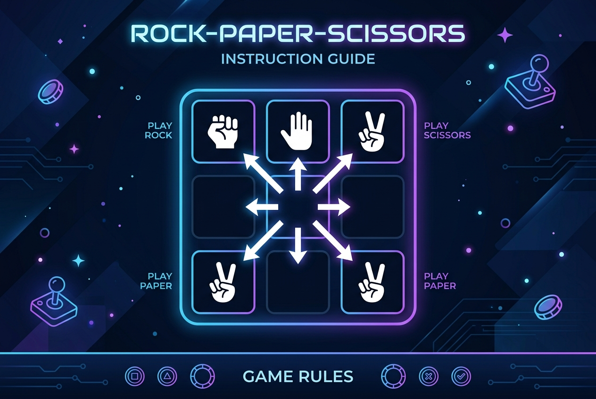

Bot Arena là đấu trường AI nơi bạn viết thuật toán điều khiển quân cờ trên lưới 9×9. Mỗi quân cờ mang một trong ba loại: Búa (Rock), Bao (Paper), hoặc Kéo (Scissors) — tuân theo luật Kéo-Búa-Bao kinh điển.
Lưới 9×9 ô. Tọa độ (x, y) với (0,0) ở góc trên trái, (8,8) ở góc dưới phải.
Mỗi player bắt đầu với 9 quân (3 Búa + 3 Bao + 3 Kéo), đặt theo đội hình ban đầu.
Trận đấu kết thúc khi một trong các điều kiện sau xảy ra:
Bot của bạn nhận input từ stdin và gửi output ra stdout theo định dạng JSON.
| Trường | Kiểu | Mô tả |
|---|---|---|
| board | Array[9][9] | Bàn cờ hiện tại. Mỗi ô là null hoặc object quân cờ |
| my_player | int (0|1) | Bạn là Player 0 hay Player 1 |
| round | int | Lượt hiện tại (bắt đầu từ 1) |
| time_limit_ms | int | Giới hạn thời gian (ms) |
| Trường | Kiểu | Giá trị |
|---|---|---|
| piece_type | string | "rock" | "paper" | "scissors" |
| owner | int | 0 (Xanh) hoặc 1 (Đỏ) |
| Trường | Kiểu | Mô tả |
|---|---|---|
| from_x | int | Cột của quân muốn di chuyển (0–8) |
| from_y | int | Hàng của quân muốn di chuyển (0–8) |
| to_x | int | Cột đích (phải kề ô gốc) |
| to_y | int | Hàng đích (phải kề ô gốc) |
Dưới đây là các template bot cơ bản để bạn bắt đầu. Chọn ngôn ngữ của bạn:
# bot_example.py — Template bot Python
import json, sys, random
def get_move(state):
board = state['board']
my_player = state['my_player']
# Thu thập tất cả quân của mình
my_pieces = []
for y in range(9):
for x in range(9):
cell = board[y][x]
if cell and cell['owner'] == my_player:
my_pieces.append((x, y))
# Chọn ngẫu nhiên một quân và một hướng hợp lệ
random.shuffle(my_pieces)
directions = [(-1,-1),(0,-1),(1,-1),(-1,0),(1,0),(-1,1),(0,1),(1,1)]
for (fx, fy) in my_pieces:
for (dx, dy) in directions:
tx, ty = fx + dx, fy + dy
if 0 <= tx < 9 and 0 <= ty < 9:
target = board[ty][tx]
# Không đi vào ô của chính mình
if not target or target['owner'] != my_player:
return {'from_x': fx, 'from_y': fy, 'to_x': tx, 'to_y': ty}
return None # Không có nước đi hợp lệ
if __name__ == '__main__':
state = json.loads(sys.stdin.readline())
move = get_move(state)
print(json.dumps(move))// bot_example.cpp — Template bot C++
#include <iostream>
#include <nlohmann/json.hpp>
#include <vector>
using namespace std;
using json = nlohmann::json;
int main() {
json state;
cin >> state;
auto board = state["board"];
int my_player = state["my_player"];
int dx[] = {-1,0,1,-1,1,-1,0,1};
int dy[] = {-1,-1,-1,0,0,1,1,1};
for (int y = 0; y < 9; y++) {
for (int x = 0; x < 9; x++) {
if (!board[y][x].is_null() && board[y][x]["owner"] == my_player) {
for (int d = 0; d < 8; d++) {
int tx = x + dx[d], ty = y + dy[d];
if (tx >= 0 && tx < 9 && ty >= 0 && ty < 9) {
if (board[ty][tx].is_null() || board[ty][tx]["owner"] != my_player) {
json move = {
{"from_x", x}, {"from_y", y},
{"to_x", tx}, {"to_y", ty}
};
cout << move.dump() << endl;
return 0;
}
}
}
}
}
}
cout << "null" << endl;
return 0;
}// BotExample.java — Template bot Java
import org.json.*;
import java.util.Scanner;
public class BotExample {
public static void main(String[] args) throws Exception {
Scanner sc = new Scanner(System.in);
JSONObject state = new JSONObject(sc.nextLine());
JSONArray board = state.getJSONArray("board");
int myPlayer = state.getInt("my_player");
int[] dx = {-1,0,1,-1,1,-1,0,1};
int[] dy = {-1,-1,-1,0,0,1,1,1};
for (int y = 0; y < 9; y++) {
JSONArray row = board.getJSONArray(y);
for (int x = 0; x < 9; x++) {
if (!row.isNull(x)) {
JSONObject cell = row.getJSONObject(x);
if (cell.getInt("owner") == myPlayer) {
for (int d = 0; d < 8; d++) {
int tx = x+dx[d], ty = y+dy[d];
if (tx>=0 && tx<9 && ty>=0 && ty<9) {
if (board.getJSONArray(ty).isNull(tx)) {
JSONObject move = new JSONObject();
move.put("from_x", x); move.put("from_y", y);
move.put("to_x", tx); move.put("to_y", ty);
System.out.println(move.toString());
return;
}
}
}
}
}
}
}
System.out.println("null");
}
}Engine giới hạn mỗi lượt 500ms. Nếu bot không trả về output trong thời gian đó, engine sẽ xem đó là lượt "bỏ qua" và đối thủ được thêm điểm.
Với Python: chỉ các thư viện chuẩn (math, random, collections...). Không được dùng numpy, scipy hay các thư viện nặng.
Không. Code bot được lưu trữ bảo mật trên server. Các thí sinh khác không thể xem code của nhau.
ELO tăng khi thắng đối thủ có hạng cao hơn. Hãy tập trung vào chiến thuật: chiếm căn cứ sớm, quản lý loại quân, và dự đoán nước đi của đối thủ.